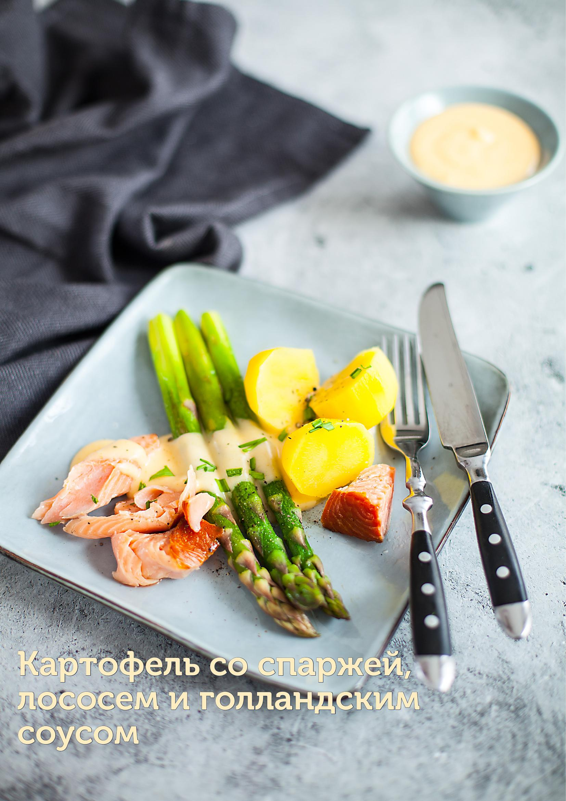

В этом блюде средний или крупный картофель лучше очистить, чтобы он идеально сочетался с нежной спаржей, мягкой рыбой и кремовым голландским соусом. Если картофель очень мелкий (бэби) и кожица у него очень тонкая, можно не очищать.
Лучше всего подходит красная рыба горячего копчения, например, радужная форель, горбуша, голец, но и слабосоленый или холодного копчения лосось будет хорош. Мы используем толстую зеленую спаржу, но можно приготовить и тонкую.
Классический голландский соус готовится с использованием венчика и паровой бани. Очень важный момент: вода не должна интенсивно кипеть, а лишь подавать слабые признаки кипения! При соблюдении этих условий риска перегреть соус практически нет.
Если соус не соединился (масло отделилось от желтков): переложить 1 ст. л. соуса в чистую теплую посуду, добавить немного лимонного сока и опять взбить венчиком до густоты. Далее, продолжая взбивать, добавлять неудавшийся соус по одной столовой ложке.